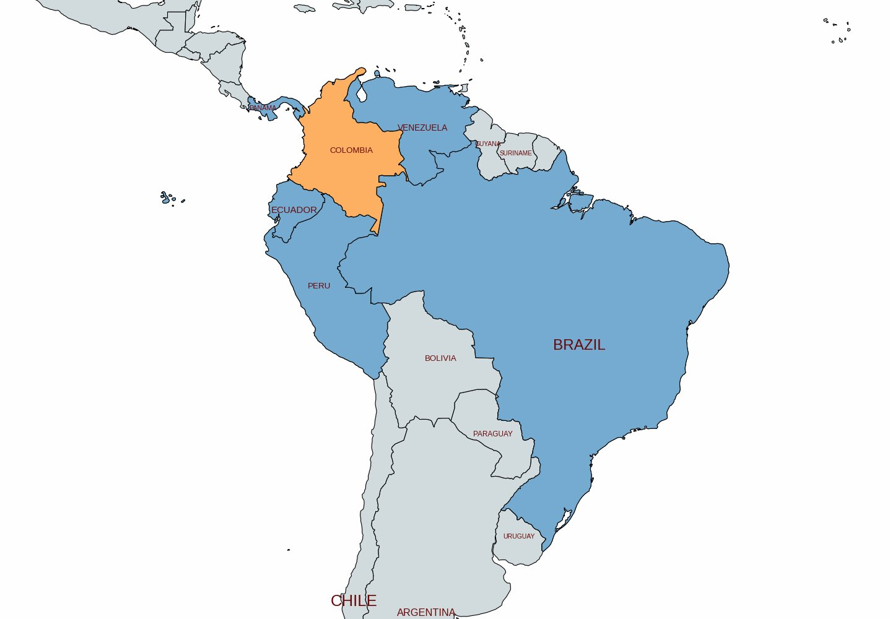
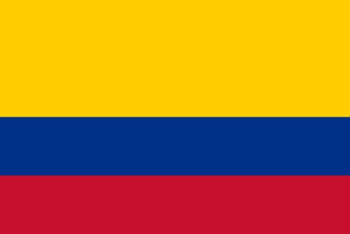
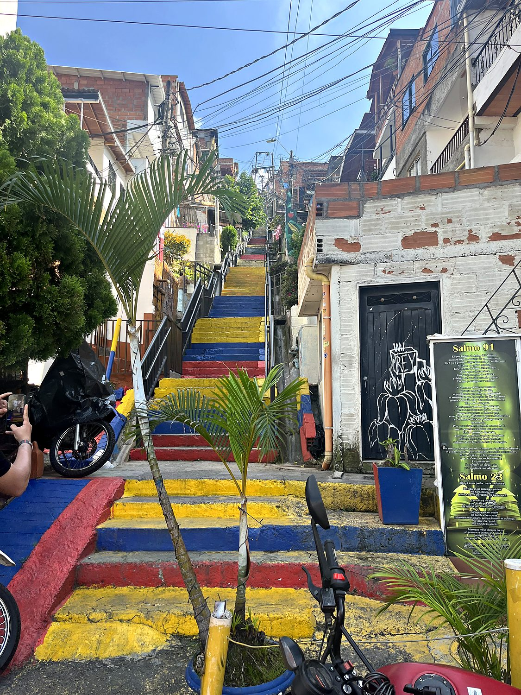
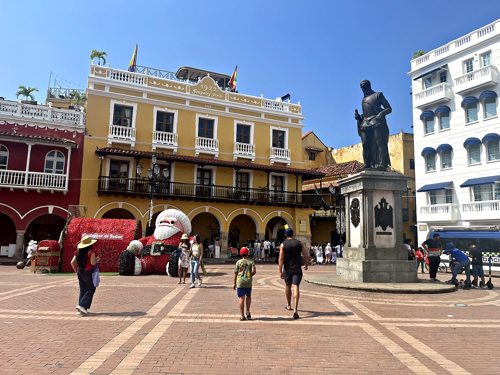
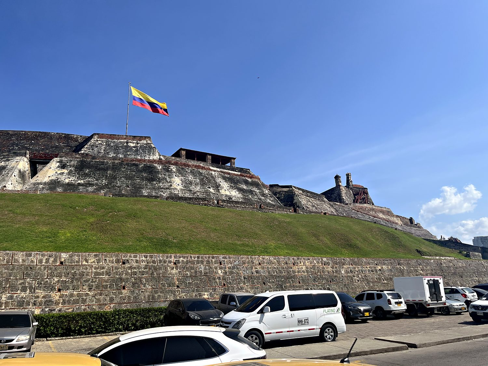

Colombia has spent the last few decades performing one of the great image rehabilitations in modern history. It recently graduated, in the popular imagination, from “please update your will before visiting” to “actually, have you considered retiring here?” I came to see how much of the transformation was real, and began, as one does, by climbing a 700-step staircase bolted to the side of a colossal 200-meter boulder. This is El Peñón de Guatapé, a granite monolith that erupts out of the Antioquian countryside like a molar the Earth forgot to floss. From its summit unfurls the view pictured above: a labyrinth of emerald water and forested islands so idyllic that I briefly forgot my thighs had filed for divorce. The lake is artificial: a 1970s dam drowned the old valley to make electricity. Among the mansions dotting its shores sits the bombed-out skeleton of one belonging to a local businessman named Pablo Escobar.
That businessman's main base of operations was Medellín, and no place better captures Colombia's improbable turnaround. In 1991, Medellín held the dubious distinction of being the most dangerous city on Earth, a homicide capital carved up by the cartel wars of the world's most infamous drug lord. Escobar was gunned down on a rooftop in 1993. In the decades since, the city reinvented itself with an almost suspicious enthusiasm, pioneering a philosophy of “social urbanism” in which its most neglected hillside slums were stitched to the prosperous downtown by gleaming public cable cars. I toured a good deal of it from the air, paragliding off a ridge above the valley while my guide surfed the thermals like a bird of prey, the vast red-brick city sprawling green and glittering far below.

Colombia's grander history begins, as so much of South America's does, with Simón Bolívar (“El Libertador”) whose armies broke Spanish rule across the 1810s and 1820s. Bolívar dreamed of welding the newly freed territories into a single mighty republic, Gran Colombia, spanning what is now Colombia, Venezuela, Ecuador, and Panama. It was a magnificent vision, and it endured roughly the length of a bad marriage. By 1831 the whole edifice had fractured along regional and personal rivalries, leaving Bolívar to die disillusioned, reportedly muttering that governing the continent was like “ploughing the sea.” Colombia kept the name and, unfortunately, much of the turbulence, weathering a 19th and 20th century punctuated by civil wars. This period was so bloody it is remembered simply as La Violencia, and the long guerrilla-and-narco conflict only formally wound down with a peace deal in 2016.

The other Colombia I came to see was older, and lay on the Caribbean coast at Cartagena. Founded in 1533, it became the most important Spanish port in the Americas: the fortified strongbox through which flowed the plundered silver of a continent, and the horrifying human cargo of the transatlantic slave trade. All that wealth made it an irresistible target for pirates (Sir Francis Drake sacked it in 1586 and departed only after an enormous ransom), which is why the Spanish eventually wrapped it in miles of massive stone walls and one of the mightiest fortresses they ever built. It is also, fittingly, the city that soaked into the fiction of Gabriel García Márquez, Colombia's Nobel-winning bard of magical realism.
To walk through Comuna 13 today is to witness a genuinely improbable resurrection. This steep Medellín hillside was, within living memory, effectively a war zone: the scene of pitched battles between gangs, guerrillas, paramilitaries, and the army. Its residents were long treated as a problem to be contained rather than a community to be served. Then came the outdoor escalators (yes, escalators, bolted up the mountainside so that people no longer had to climb hundreds of steps to reach home), the murals, the tour guides, and the hip-hop. Before long, the neighborhood reinvented itself as one of the most vibrant open-air galleries in South America. I took the tour in Spanish, understood perhaps 60% of it over the joyful racket of street performers and boomboxes, and loved every minute. Comuna 13 both figuratively and literally has painted over its scars in the most vibrant colors it can find.

Cartagena's old town is the sort of place that makes you distrust your own camera, as it is so relentlessly photogenic that it feels faintly like a film set. Behind its honey-colored ramparts lies a maze of squares and lanes lined with balconied mansions dripping bougainvillea and painted in a palette best described as “tropical fruit salad.” A darker current runs beneath the beauty: this was a major hub of the slave trade and home to one of Spanish America's three tribunals of the Inquisition, whose suitably grim museum I visited. The modern city carries its history lightly, the horse carriages and açaí bowls spilling out of every plaza a testament to a country decided to be defined by its present rather than its turbulent past.

Guarding the approaches to Cartagena is the Castillo San Felipe de Barajas, the largest and most formidable fortress the Spanish ever raised in the Americas. It is a colossal wedge of stone bristling with cannon, and honeycombed with tunnels engineered so cunningly that defenders could hear the footsteps of anyone attempting to sneak in beneath the walls. It withstood siege after siege, most famously repelling a gigantic British invasion in 1741 despite being wildly outnumbered. The British had been so confident of victory that they had minted their celebratory medals in advance, a timeless lesson in not counting one's colonial chickens. The ramparts offered a wonderful view, with the Colombian flag snapping overhead and the skyscrapers of modern Bocagrande glinting across the bay.
